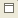
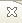

Figure: Bookmarks View
Tool Bar
| Deletes the selected book mark | |
 |
Allows you to configure the filters to apply in this view |
| Provides menu option set filters and preferences in this view | |
 |
Minimize the view |
|  | Maximize the view |
|  | Close the view |